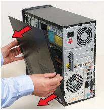
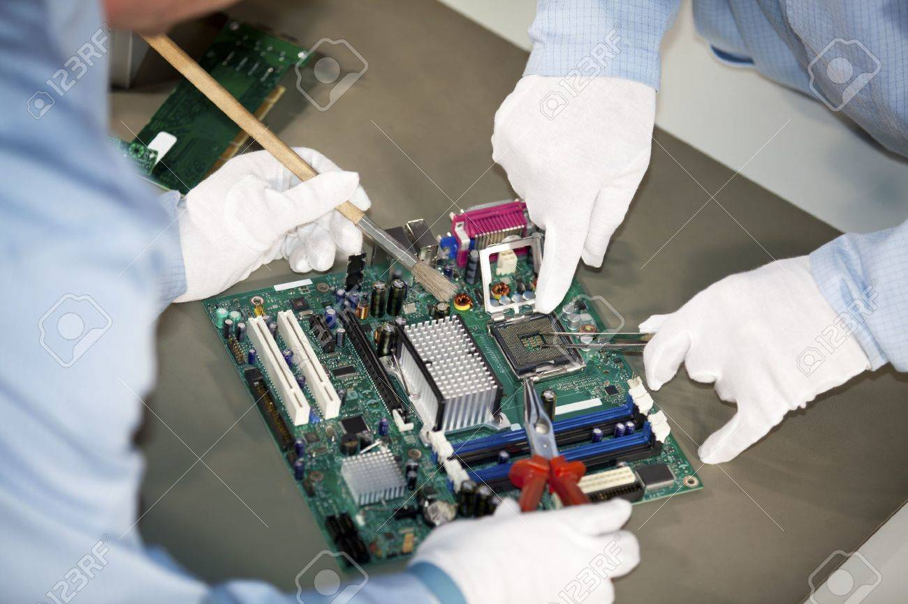
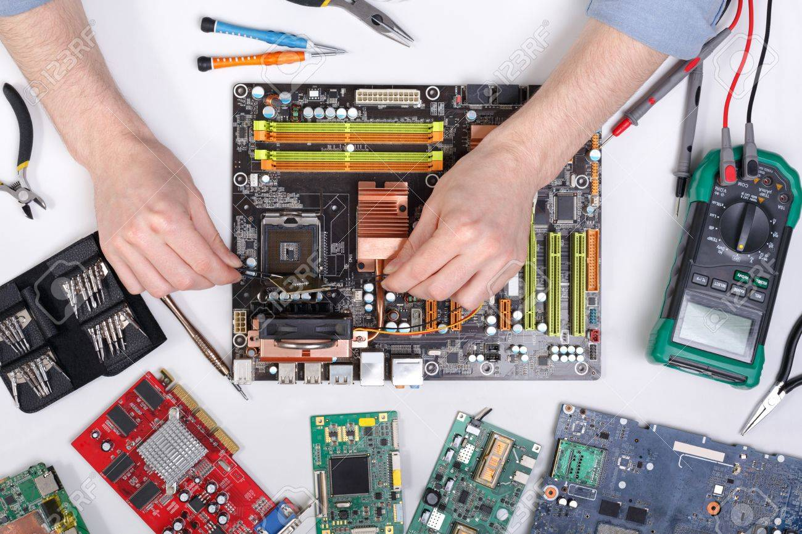
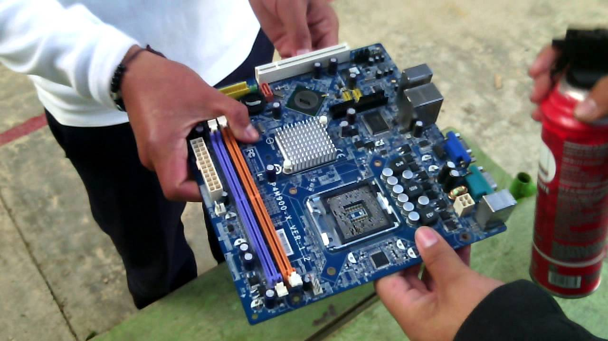

¿Cómo hacer mantenimiento preventivo a la tarjeta madre?
Todos sabemos lo importante que es que nuestro ordenador se mantenga siempre
trabajando para nosotros en buen estado, pero en alguna de las ocasiones somos
nosotros los que debemos de trabajar para el ordenador, ya que hay que ser reciproco
en un equipo en trabajo y eso es lo que somos junto con nuestro ordenador.




--Limpiar-polvo-tarjeta-madre--
Primeramente quitamos la tapa del case o carcasa de nuestro ordenador una vez hecho esto, lo acostamos para poder tener una posición y acceso más fácil hacia los dispositivos de nuestro ordenador con una pequeña brocha limpiamos el polvo que se haya almacenado en la placa madre, pero esto nos servirá solo para remover en alguna manera polvo que se encuentra casi impregnado a las partes y piezas con un compresor de aire, lo pasamos por las diferentes partes del ordenador, es decir por la placa madre, tarjetas de audio, video y red, ventiladores internos inlcuido el que corresponde al procesador pasamos luego de ello una secadora de cabello por las partes que antes ha pasado el compresor de aire, debido a que pueda haberse filtrado algo de agua o humedad en dicho proceso, Hay quienes recomiendan dar una pequeña pasada de aceite de las máquinas de coser por la placa madre, esto para que sirva como una pequeña película de protección, lo cual no estoy del todo de acuerdo debido a que el aceite con el polvo que a futuro pueda entrar, formará una capa más densa y fuerte dificil de despegar.Para todo el proceso se recomienda factores de seguridad básicos tales como: Usar mascarilla y gafas en lo posible para evitar aspirar el polvo el ordenador que se encuentre totalmente desconectado de los cables de poder, no basta con solo apagar el ordenador haberse desmagnetizado con anterioridad para evitar posibles daños por contacto accidental con las partes del ordenador, lo cual se puede hacer tocando el case del mismo o si se desea mayor seguridad, tomar con las dos manos a una tubería de agua por un lapso de 5 minutos como máximo.

Pasos a seguir
Paso 1
Remueve la tarjeta madre de la caja de la computadora.
Saca cualquier ventilador,tarjeta de memoria o de vídeo de la tarjeta madre.
Paso 2 Rocía la tarjeta madre con una lata de aire comprimido. Este se puede comprar en tiendas de artículos de oficinay también se le llama aire removedor de polvo. Rocíalo sobrela tarjeta madre para remover cualquier polvo o suciedad que esté atrapada en ella.
Paso 3 Moja un cepillo suave, como un cepillo de dientes Nuevo con cerdas suaves, con agua destilada. No uses agua del grifo porque los minerales pueden causar acumulamientos o daños en los componentes de la tarjeta madre. Cepilla cualquier área que el aire comprimido no haya limpiado muy suavemente. Si la frotas muy fuerte corres el riesgo de dañarla o romperla.
Paso 4 Toma un paño libre de pelusa y seca la tarjeta madre con alcohol de frotar. Frotar alcohol removerá cualquier suciedad olvidada o partículas de polvo y ya que es más puro incluso que el agua destilada, esto limpiará cualquier residuo.
Paso 5 Pon la tarjeta madre a secar. Puedes usar una secadora del cabello en una configuración de calor baja durante unos minutos para secar el alcohol y el agua, pero es mejor dejarla secar durante la noche para asegurarte que esté completamente seca.
Paso 6 Vuelve a instalarla una vez que estés seguro que está seca. Conecta todos los ventiladores u otros componentes que hayas removido y entonces ponla en su lugar dentro de la cubierta de la computadora.
Información recolectada de techlandia.com
Paso 2 Rocía la tarjeta madre con una lata de aire comprimido. Este se puede comprar en tiendas de artículos de oficinay también se le llama aire removedor de polvo. Rocíalo sobrela tarjeta madre para remover cualquier polvo o suciedad que esté atrapada en ella.
Paso 3 Moja un cepillo suave, como un cepillo de dientes Nuevo con cerdas suaves, con agua destilada. No uses agua del grifo porque los minerales pueden causar acumulamientos o daños en los componentes de la tarjeta madre. Cepilla cualquier área que el aire comprimido no haya limpiado muy suavemente. Si la frotas muy fuerte corres el riesgo de dañarla o romperla.
Paso 4 Toma un paño libre de pelusa y seca la tarjeta madre con alcohol de frotar. Frotar alcohol removerá cualquier suciedad olvidada o partículas de polvo y ya que es más puro incluso que el agua destilada, esto limpiará cualquier residuo.
Paso 5 Pon la tarjeta madre a secar. Puedes usar una secadora del cabello en una configuración de calor baja durante unos minutos para secar el alcohol y el agua, pero es mejor dejarla secar durante la noche para asegurarte que esté completamente seca.
Paso 6 Vuelve a instalarla una vez que estés seguro que está seca. Conecta todos los ventiladores u otros componentes que hayas removido y entonces ponla en su lugar dentro de la cubierta de la computadora.